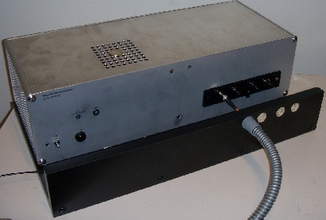
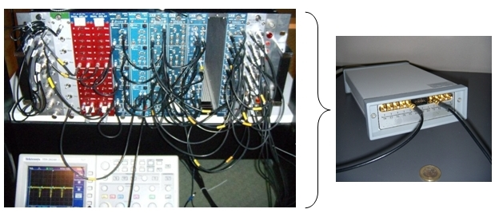

Experimental Setup
Experiments in quantum optics look complicated only at first sight. On this page you can follow the setup of a quantum optical experiment, you get information about the detectors for single photons and the data aquisition.
Optical components
You can follow the optical setup of our experiment. With the right grey button below, you can choose the optical components to appear on the table. An explanation is available. Flash-Player (Version 9 - Freeware) is required [Download].
Detectors:
The human visual system is a great light „detector“: Vision with high spatial resolution and colour discrimination is possible over many orders of magnitude of intensity (brightness). The light sensitive retinal rods react on single photons in principle, however a light sensation requires much more than single photons due to the details of neural transmission and absorption in the retinal cones. A stream of 900 photons per second is necessary for a visual stimulus. Despite its tremendous capability, the human visual system is not capable of detecting single photons [Hec42, Bay79].
In our laboratory we use avalanche photodiodes (APDs). These light sensitive elements emit a voltage pulse for any amount of incident light. APDs are binary detectors, i.e. they are not capable to determine the amount of light within a time interval, or photon numbers. As any technical device, APDs emit signals uncorrelated to the input, i.e. noise. About 1000 incidents per second are recorded in complete darkness (dark counts). When very dim light is incident on the APDs, 50% of the incident photons are actually detected. This quantum efficiency is quite high for such a sensitive detector. Photon rates larger than 1 million per second cause the APD to saturate. It takes 50 nanoseconds (0.000000005s) for the detector to recover to full sensitivity after detection of a photon. Additional electronics are used to protect the APD from excessive light intensity and damage. In our lab, a set of four APDs is connected via optical fibres to the experiment (fig.1).

Figure 1: Box of four APD single photon detectors with electronic overrange protection.
Data aquisition:
Short voltage pulses at high repetition rates can be handled with electronics originally designed for high energy physics experiments (fig 2, left). In order to simplify the setup, we use a programmable Time-Digital-Converter (TDC), which allows us to create all electrical connections by software. The lower maximum count rate of the TDC is not a limitation for our purpose.

Figure 2 left: Data aquisition with NIM logic electronics
Figure 2 right: Simplified data aquisition with programmable TDC
Authors: P. Bronner, A. Strunz, April 2008